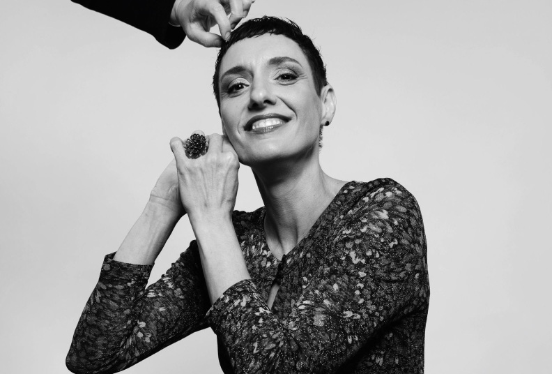
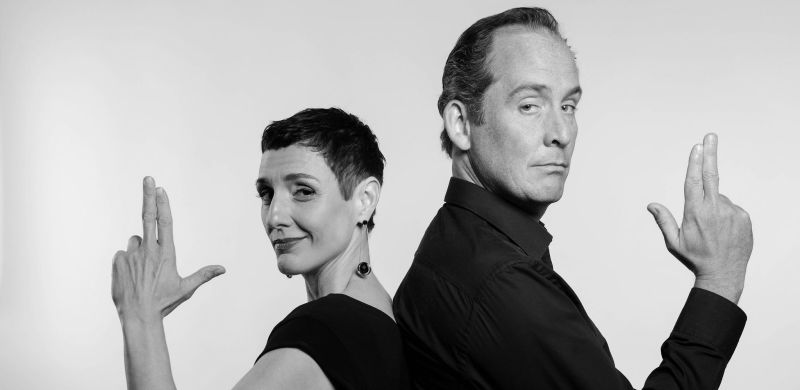
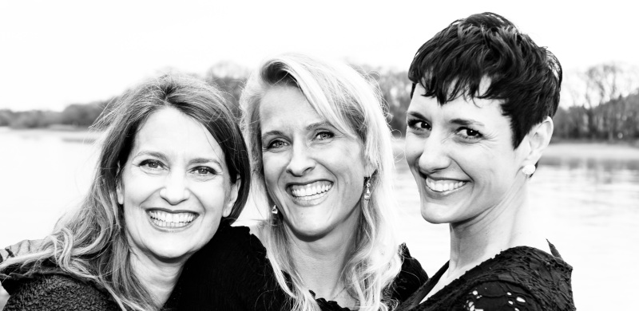
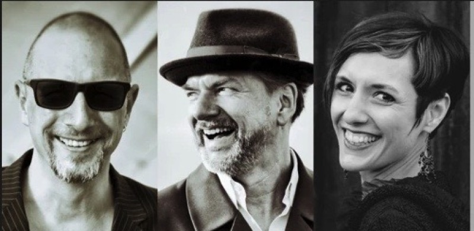

18
Apr 2026
Musik zur Marktzeit – Nachtigall, mon amour
Mit Barbara Rosnitschek (Flöte) und Shin Hwang (Klavier). Klassisches Repertoire von Vivaldi bis Ravel.

Sängerin & Gesangspädagogin
„Bei Cordula Stepp war es der Genuss ihres schier endlos auf- und abschwingenden Soprans, der das Publikum begeisterte. Der ausgereifte Glanz ihrer Stimme wusste jede Atempause perfekt zu verstecken.“
Rhein-Neckar-Zeitung
„Künstlerisches und Pädagogisches miteinander zu verbinden – das ist das, was mich erfüllt.“
Mein Weg als Sängerin und Pädagogin begann in Estoril, Portugal, führte über das Studium der Schulmusik (Klavier, Gesang) an der Musikhochschule Mannheim und ein paralleles Germanistikstudium in Heidelberg bis zur Konzertreife bei Prof. C. Rüggeberg an der Kunstuniversität Graz.
Auf der Bühne bin ich in Konzert-Liedern, Kirchenkonzerten und Operngalas in Österreich, Italien und China zu Hause. Im Kabarett-Duo Liederträchtig entdecke ich die humorvolle Seite der Musik, und in Crossover-Projekten suche ich die Freiheit jenseits der Genregrenzen.
Seit dem Jahr 2000 arbeite ich als Gesangspädagogin – privat und an verschiedenen Institutionen. Mein Ansatz: freudvolle, kreative Begegnung mit der eigenen Stimme. Ich unterrichte alle Stimmtypen, Genres und Levels.
Gesangs- und Stimmbildung für Erwachsene und Kinder – alle Stimmtypen und ästhetischen Vorlieben.
Vorbereitung auf Aufnahmeprüfungen an Musikhochschulen, Schauspielschulen und Jugend musiziert.
Für Sänger, Schauspieler, Pädagogen, Logopäden, Lehrkräfte und andere Sprechberufe.
Stimmbildung in der Gruppe für Erwachsene und Kinder, Studiokonzerte und Wochenend-Workshops.
Körperarbeit und Stimmarbeit verbinden – Atemtechnik, Körperbewusstsein und freies Singen.
Methoden & Fortbildungen: Rabine-Methode, Estill Voice Training, Complete Vocal Technique (CVT), Lichtenberger Methode, Gewaltfreie Kommunikation, Psychosoziale Kompetenz

mit Daniel Möllemann
Musikkabarett der feinen Art: Sarkasmus trifft auf beschwingte Melodien, Publikumserwartungen werden unterlaufen und Klischees mit ungeschminkter Realität konfrontiert – im klassischen Gewand von Chansonkunst und Opernarien.
Aktuelles Programm: „Zeit-Los – Das WiedererLachen“

mit Julika Birke & Annette Wieland
Gesangskunst aus fünf Jahrhunderten mit kabarettistischem Charme – von Monteverdi bis Jazz-Standards, begleitet von Florian Stricker am Klavier.

Stimmliche Experimente jenseits der Genregrenzen. Zeitgenössische Musik, die ästhetische Freiheit und die enge Zusammenarbeit mit Komponisten schätzt.
Klassisches Liedrepertoire und geistliche Musik in intimer Besetzung – Auftritte in Österreich, Italien und China.
Mit Barbara Rosnitschek (Flöte) und Shin Hwang (Klavier). Klassisches Repertoire von Vivaldi bis Ravel.
Gesangskunst aus fünf Jahrhunderten mit kabarettistischem Charme. Mit Julika Birke, Annette Wieland und Florian Stricker (Klavier).
Gesangskunst aus fünf Jahrhunderten mit kabarettistischem Charme. Mit Julika Birke, Annette Wieland und Florian Stricker (Klavier).
Musikkabarett mit Cordula Stepp und Daniel Möllemann. Moderne Absurditäten in Chanson, Oper und zeitgenössischem Stil.
Ob Sie Interesse an Gesangsunterricht haben, eine Anfrage für ein Konzert stellen möchten oder einfach in Kontakt treten wollen – ich freue mich auf Ihre Nachricht.